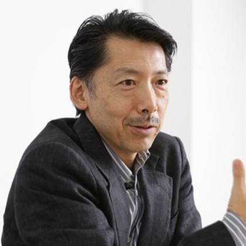
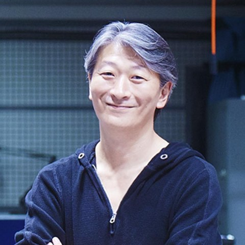

文化人類学の視点
竹村 眞一
Shinichi Takemura
文化人類学者／SPHERE 企画主宰
地球環境や人間の営みを新たな視点から捉え、デジタル地球儀「SPHERE」などの企画に携わる。
TALK & EXHIBITION
地球を可視化する技術は、私たちの世界の見方をどう変えるのか。
自動でコピーできませんでした。下の文面を選択してコピーしてください。
文化人類学とテクノロジー。ふたつの視点が向き合う対談です。

Shinichi Takemura
文化人類学者／SPHERE 企画主宰
地球環境や人間の営みを新たな視点から捉え、デジタル地球儀「SPHERE」などの企画に携わる。

Osamu Ogasahara
さくらインターネット共同創業者／起業家
テクノロジーを社会につなぐ活動を展開し、スタートアップ支援や新たな技術の活用に取り組む。
地球の今を映し出すデジタル地球儀「SPHERE」。
私たちは、テクノロジーによって地球をどこまで理解できるのだろうか。
地球を可視化する技術は、私たちの認識や行動をどのように変えていくのか。
文化人類学とテクノロジー、それぞれの視点からSPHEREの可能性を探ります。
トークイベントに加え、デジタル地球儀「SPHERE」の展示を実施。
トークイベント開催時間外にも地球儀をご覧いただけます。